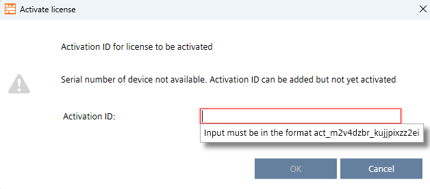
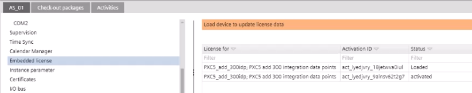
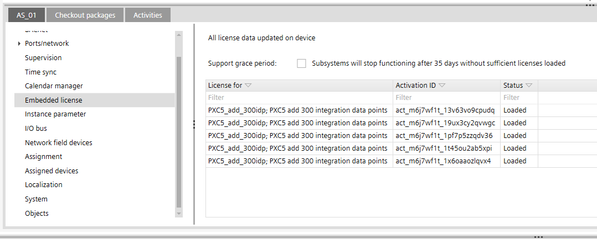

Adding additional license to a device
When expanding a project, it must be taken into account that the available number of data points may no longer be sufficient. In this case, an additional license order must be placed for the number of data points that exceeds the existing license. The new license file must then be added to the corresponding device.

If no license is available, the device can be operated without restriction during the “grace period”.
More information to the “grace period”, see
Frequently asked questions for embedded licensing
What is the grace period?
- Go to Building > Building structure.
- Select the device.
- Select the Embedded license tab.
- Select Add.
- Copy the Activation ID from the LMS license file into the clipboard.
- Paste the activation ID in the Activation ID field.

- Click OK.
- The license is successfully activated but not loaded to the device yet.

- Go to Startup > Configure and download.
- In the Engineered devices tab, right-click a device that matches a discovered device.
- Select Load and then Full (device may restart) or Full with upload.
- The licenses are downloaded.
- Select Check.
- In the Status column, verify the state of the downloaded license files.

If additional data points are added to a device, an error message is displayed if the device limit is exceeded.